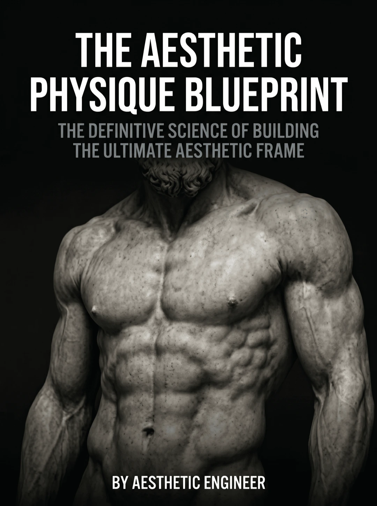
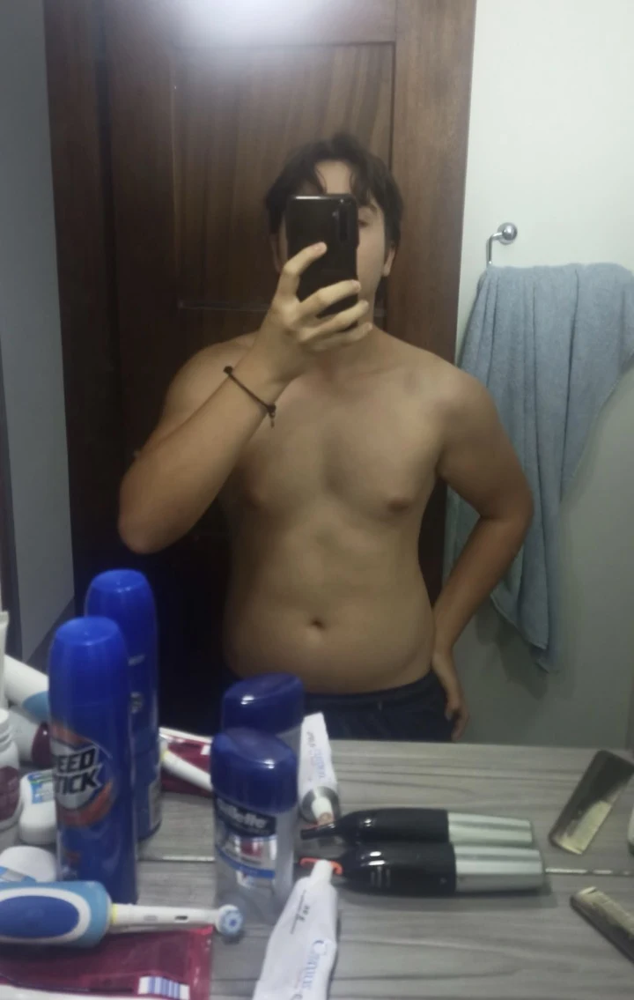
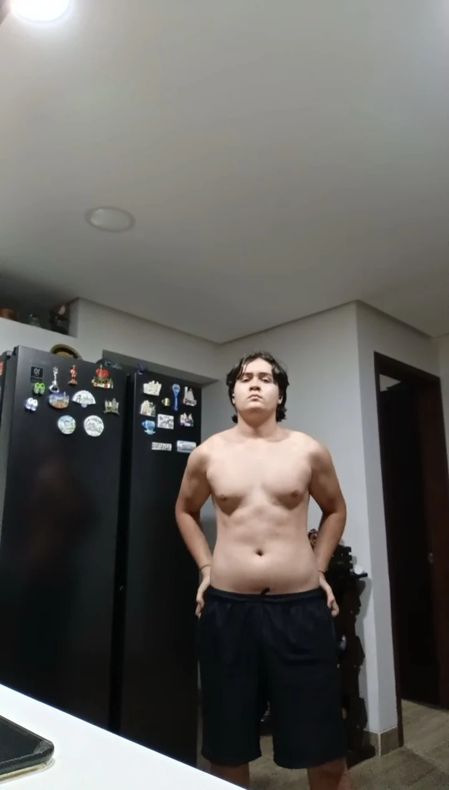
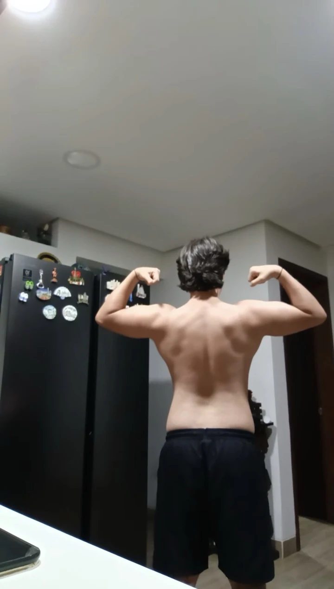
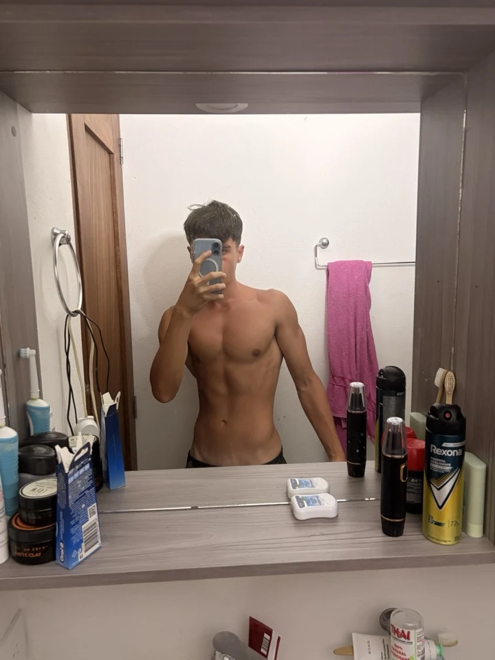
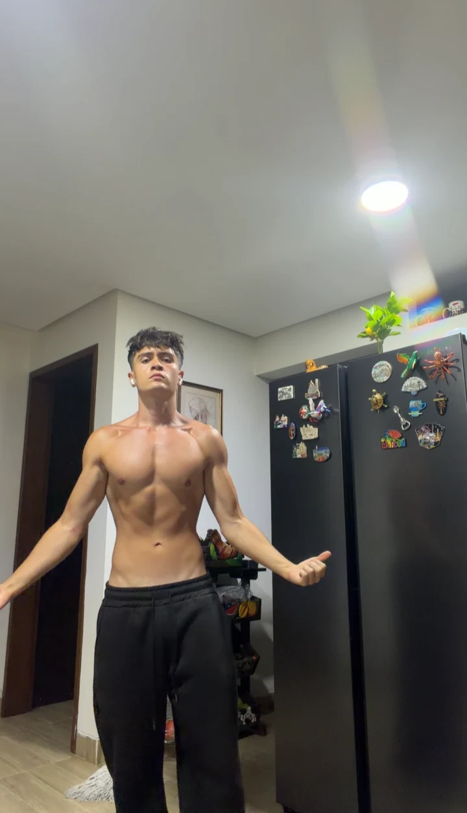
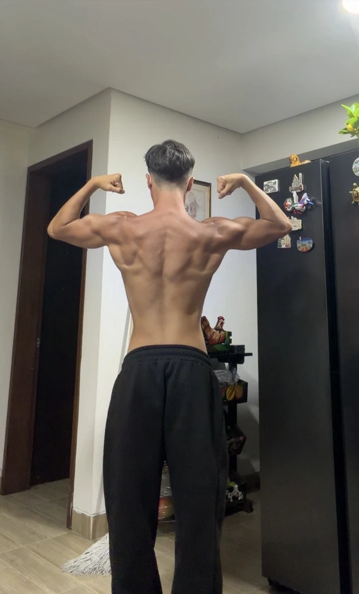
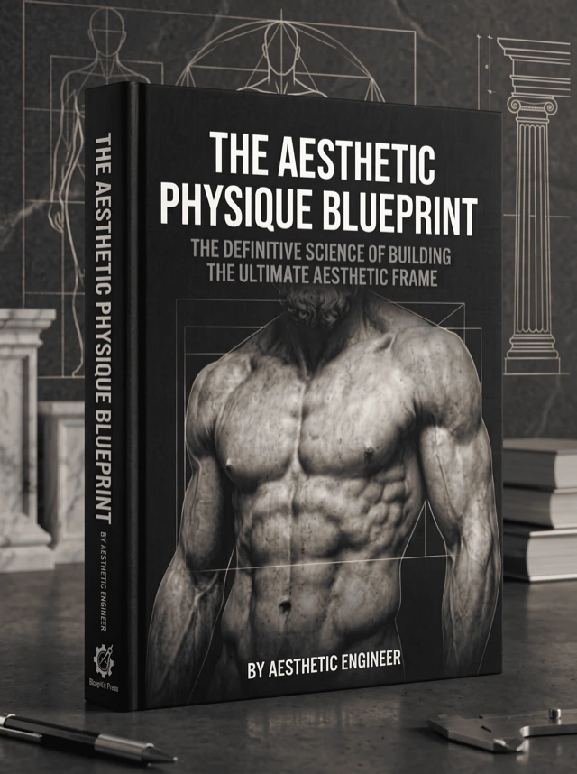

The Aesthetic Physique Blueprint
Instant PDF · One-time $12
Science-backed · Natural · No fluff
Wide shoulders. A real V-taper. Visible abs. The exact science-backed system to get there naturally. No dirty bulking. No starving. No bro-science.
The same mechanisms from the posts, GLUT4 timing, the leucine threshold, why leanness is a hormone strategy, assembled into one system you can actually run.
You train hard and still look the same? You're not lazy. You were never shown how the body actually builds an aesthetic shape.
⚡ Instant PDF download

Because the advice you were handed is broken. Here's the trap most guys get stuck in for years:
The "just bulk" lie
You ate everything in sight to "get big." You got softer, not bigger. Now you're skinny-fat, small and covered.
More volume, more junk
20 sets a session, every angle, every machine, and your shoulders and back still look exactly the same as last year.
Form without function
You half-rep through partials and "feel the pump", but never train the one position that actually forces a muscle to grow.
Years, gone
Endless conflicting tips. No system. So you stall, get discouraged, and start to think you just have "bad genetics."
You don't have bad genetics. You have a bad map. Here's the right one.
From the Aesthetic Engineer
I started at 51kg. Skinny, invisible, frustrated. So I did what the internet told me, I dirty bulked.
It wrecked me. I hit ~30% body fat, lost every bit of definition, and got gyno as my hormones tanked. I'd somehow managed to be skinny and fat at the same time.
Then I stopped guessing and started reading the actual science, how muscle is built, why getting lean first changes everything, what training stimulus really matters.
I fixed the fundamentals. The physique followed. This guide is that exact system, minus the four wasted years.






Not opinions. Mechanisms. This is why most guys stay stuck, and exactly what the system fixes.
Get lean first
Carrying too much fat raises aromatase, your body converts testosterone into estrogen, killing the hormonal environment you need to build. Lean first isn't vanity. It's the foundation.
Less volume, real failure
Growth (mTOR signaling) is driven by hard, close-to-failure sets, not 20 junk sets. Fewer, harder sets build more and leave you recovered enough to do it again.
The lengthened position
Muscles grow most when loaded in a deep stretch. Train the lengthened position and you get more growth from the same effort. Most guys cut it short and leave gains on the table.
Shoulders = frequency
Side delts are the #1 driver of the wide, capped, V-taper look, and they recover fast. Hitting lateral raises with the right frequency is how you actually get wide.
Feed the right tissue
Timing nutrients around training improves nutrient partitioning (GLUT4), sending more of what you eat into muscle instead of fat. Same calories, better result.
Lean bulk math
There's a ceiling to how fast you can build muscle (think FFMI). Eat past it and the extra is just fat. The right small surplus builds muscle while staying aesthetic, no dirty-bulk rebound.

90 pages. Zero fluff.
A complete system, not a tip list.
8 chapters. Each one removes a reason you've been stuck.
Train for the mirror
Build the shape people actually notice (delts, back width, the V-taper), not just numbers.
Eat to build
Exactly what and when to eat to grow muscle, without burying your abs in fat.
Cut correctly
Strip fat and reveal definition while holding onto every hard-earned pound of muscle.
Lean bulk without the fat
The surplus math that builds muscle and keeps you aesthetic, the opposite of a dirty bulk.
Transition between phases
When to bulk, when to cut, and how to switch without losing your progress or your shape.
Pull the hormone levers
The natural habits that keep testosterone working for you instead of against you.
The full system
How every piece fits together into one repeatable plan you can run for years.
Your day-one plan
Close the guide and know exactly what to do in your next session, no more guessing.
Plus two tools, included
The Metabolic Calorie Calculator
Google SheetEnter your stats and it returns your maintenance, cut and bulk targets in seconds. You stop guessing at the one number everything else depends on.
The Physique Change Tracker
Google SheetLog your measurements and it turns them into a body fat estimate you can follow week by week. More reliable than a body fat scale and more honest than the mirror on a bad day.
✅ This is for you if…
🚫 This is not for you if…
This one guide replaces what most guys burn money and time on:
Includes the Metabolic Calorie Calculator and the Physique Change Tracker.
Today, one time
$12
The full 90-page system. Instant download.
Get The Blueprint for $12🛡️ 7-day money-back guarantee
Less than one takeaway meal. This one lasts a lot longer.
Try the entire Blueprint for 7 full days. Read it, apply it, put the system to work. If it doesn't give you a clear, science-backed plan you can actually run, email us and we'll refund every cent. No questions asked.
All you risk is staying exactly where you are.
If you're natural and willing to apply it, yes. This isn't a personality type or a "genetics" thing, it's the underlying mechanics of how a body builds an aesthetic shape. Follow the system, get the result.
No, beginners benefit most because you skip the years of mistakes entirely. It starts from the fundamentals and builds up, with a day-one plan so you know exactly what to do first.
Almost certainly. Most long-term stalls come from missing a few specific principles, lengthened-position training, the right volume, getting lean before you bulk. Fix those and things move again.
No. A basic gym with dumbbells and a few machines is plenty. This is about training and eating intelligently, not about a cabinet full of supplements.
The opposite. Every recommendation traces back to a real mechanism, how muscle protein synthesis is triggered, why body fat affects your hormones, how nutrient timing works, translated into plain language you can act on.
Instantly. After checkout you get immediate access to download the PDF, read it on your phone, tablet, or laptop. No waiting, no shipping.
You're covered by a 7-day money-back guarantee. Try the whole system risk-free, if it's not a fit, email us within 7 days and we'll refund every cent, no questions asked.
You can keep guessing and watch another year pass with the same body in the mirror. Or you can get the exact system for $12 and start building the aesthetic, lean physique you actually want, the right way, naturally.
Get The Blueprint for $12Instant PDF download · One-time payment · 7-day money-back guarantee
The browser inside this app won't open the checkout. Copy the link, paste it in Safari, and your purchase goes through normally.
Continue anyway